내가 제일 잘 아는 걸,
한 장에 담는 중이에요 📊
The presentation posters are nearly done. Many are still a work in progress — the students will finish them next week and get ready to present. And the brief is a demanding one for a summer camp: every poster has to carry facts, ideas, opinions, illustrations and demonstrations, all at once.

📋 Five Things on Every Board The brief
That combination is what turns a poster into a presentation. Facts alone are a report. Opinions alone are a chat. Put them together — and then have to stand up and show someone — and the child has to actually own the material.
🎹 “How to Play Piano” Facts, opinion and a keyboard you can point at
Look at what is on this one board. A hand-drawn musical staff with notes along the top. A full keyboard drawn out by hand, every key labelled C–D–E–F–G–A–B across the octaves, so they can demonstrate on it. Photographs of grand, upright and electric pianos. A list of music styles — jazz, classical, modern, electric piano.
And then the two lines that make it theirs:
“The best thing playing Twinkle Twinkle Little Star to the beginner.”
“How to play piano is never give up and keep doing it — and also the boys piano is wonderful.”
That second one is the opinion box, filled exactly as it should be: not a fact you could look up, but something they believe after actually learning to play.
🧸 “TOYS for Girls” Five categories and a slime recipe
A completely different subject, same structure. This one is organised into clear sections, with magazine cutouts pasted in as the illustrations:
The slime section is the demonstration: “How to make different kinds of slime,” with recipes cut out and pasted down. And in the middle of it, written straight to the audience — “What is your favourite slime?” A question planted in advance, so the presentation talks back to the room instead of at it.
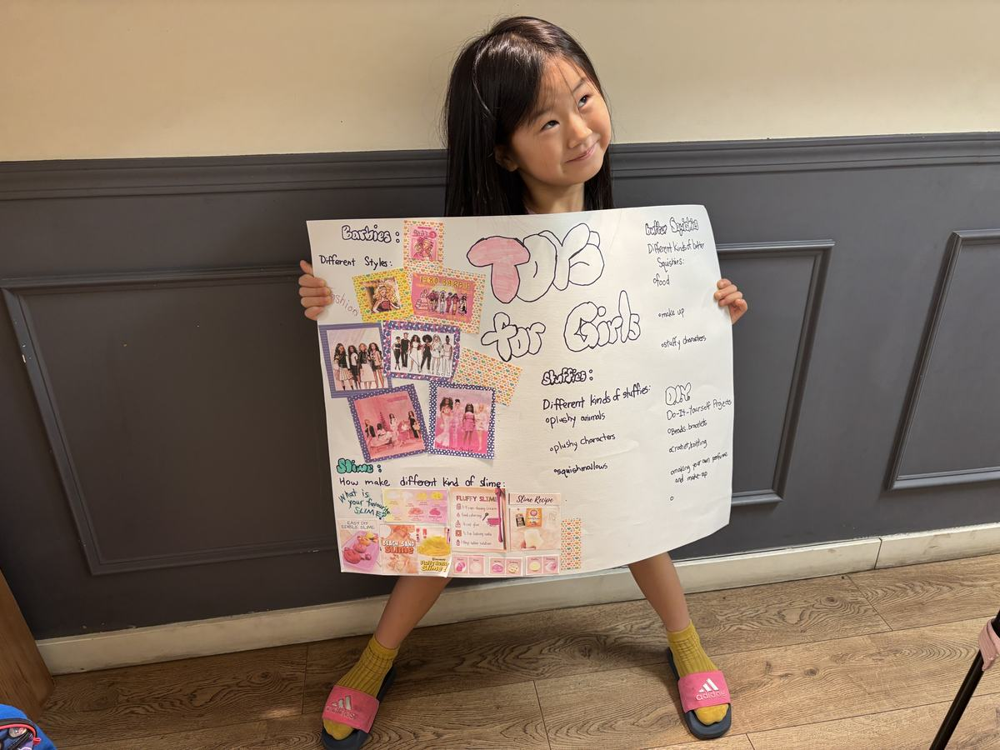
✂️ Still in Progress Cut, arrange, glue, write
Most boards are still being built, which is its own kind of work: choosing what earns a place, laying it out before anything gets glued, and finding the pictures that carry the point.

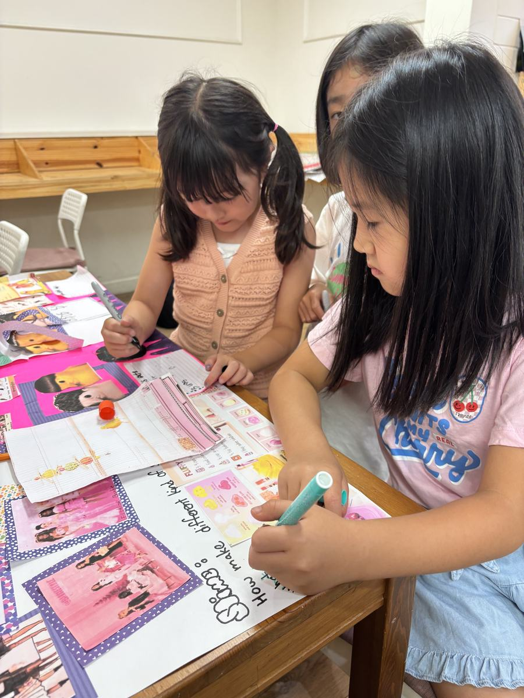
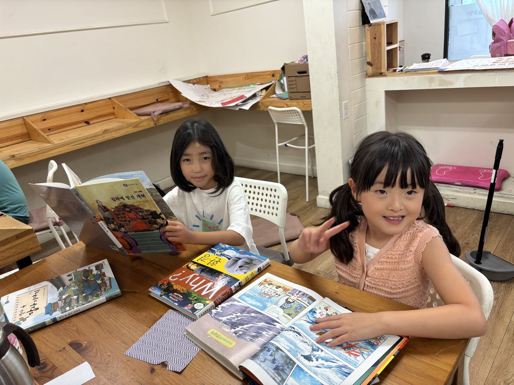
🍚 Lunch Rice · stew · kimchi
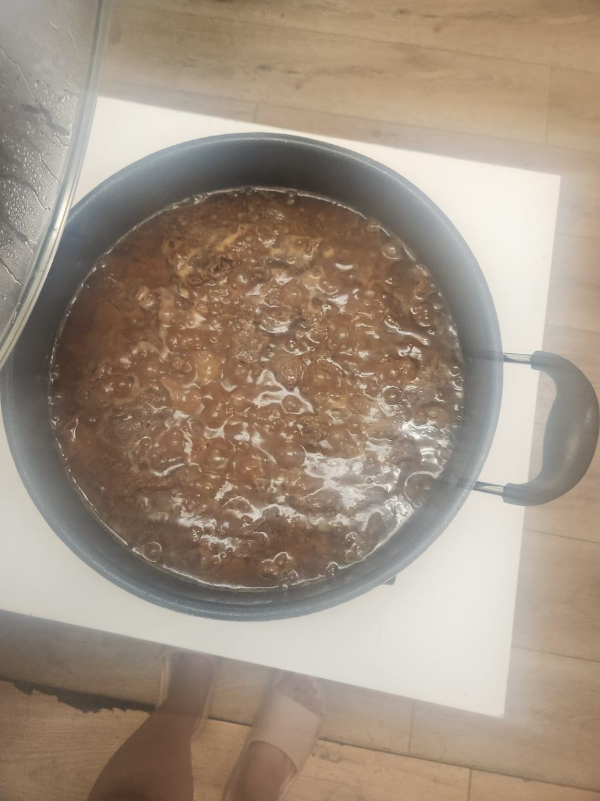
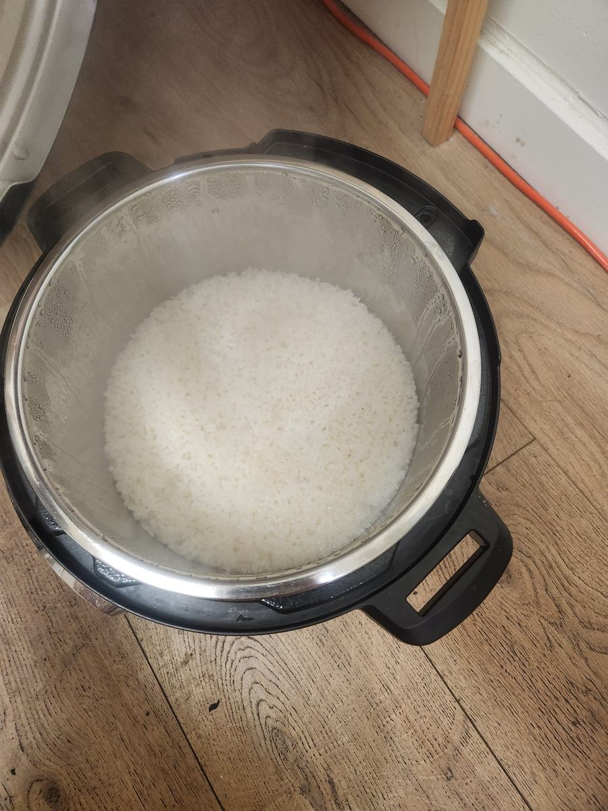
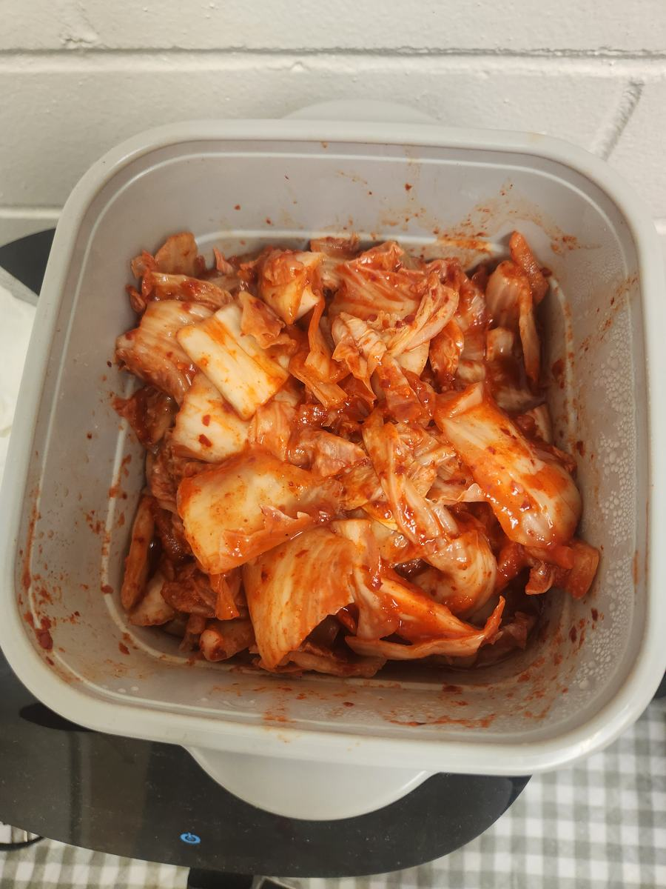
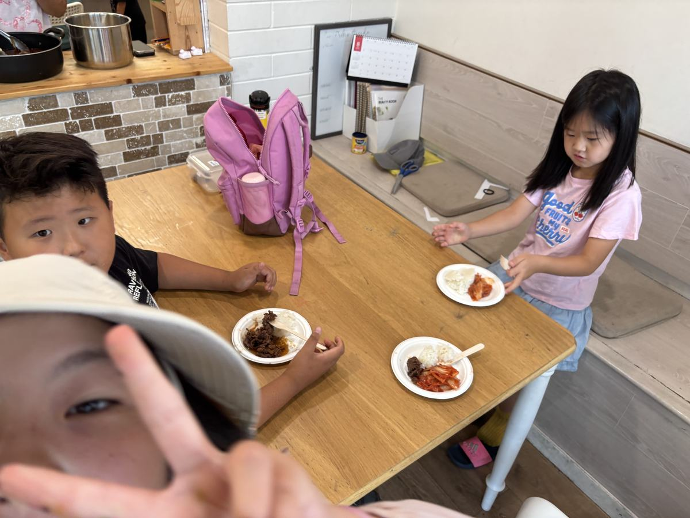
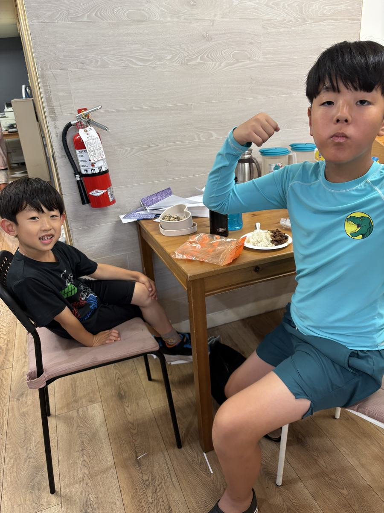
💦 Friday Afternoon Pool & park
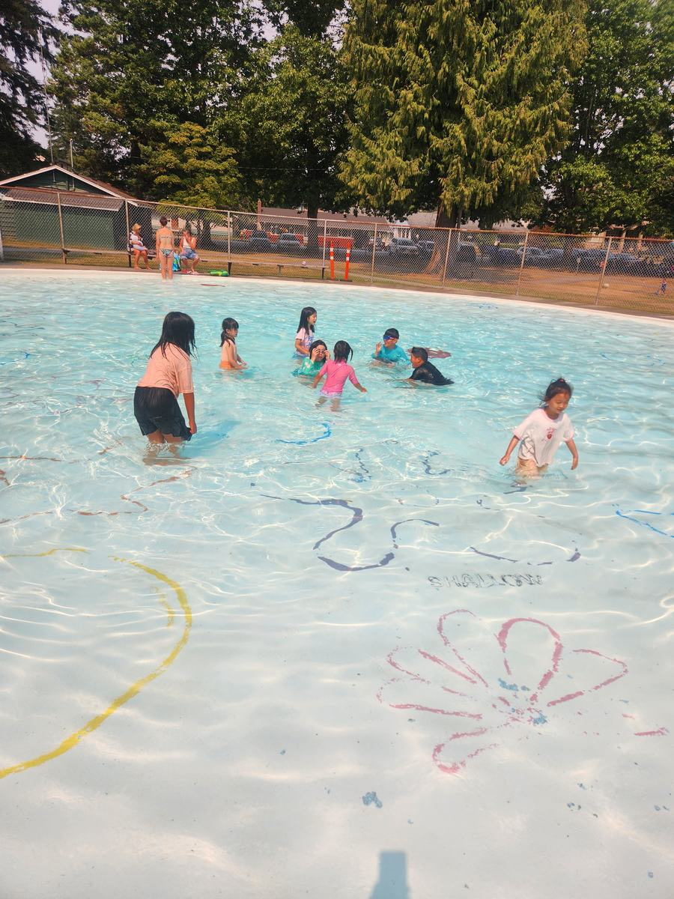
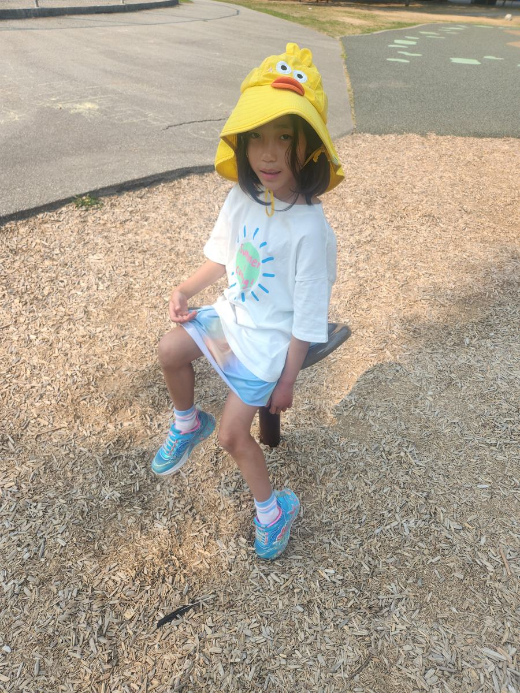
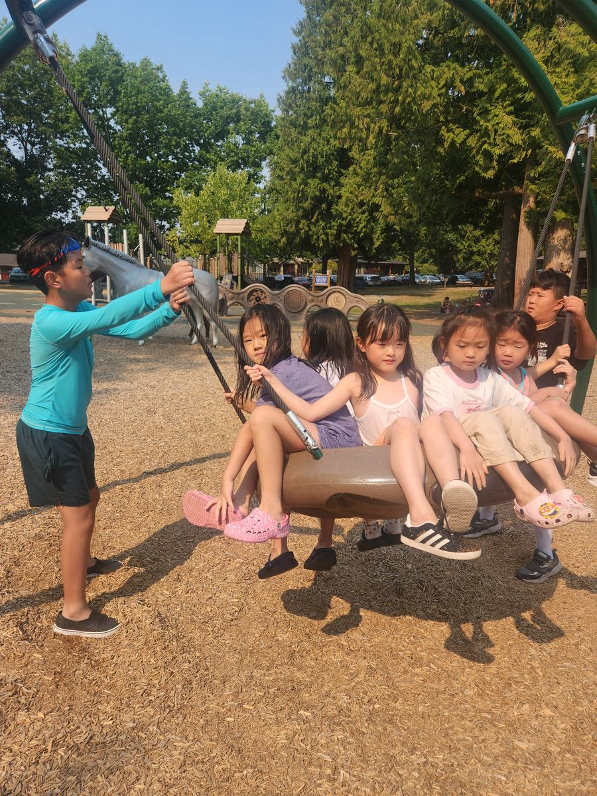
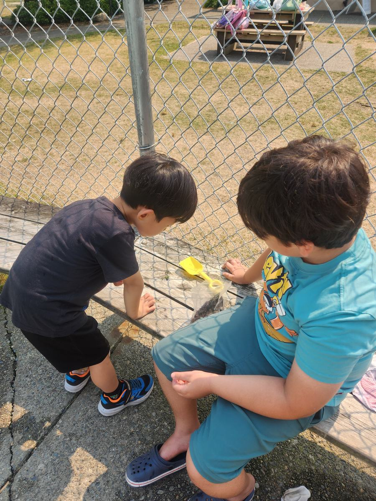
Next week: the presentations. The posters get finished, and then each student stands up and presents theirs. Ask yours what their topic is — and whether they have practised their opinion out loud yet.
A poster is just paper. What we are really building is the ability to stand in front of people and explain something you care about. Have a wonderful weekend! 📊